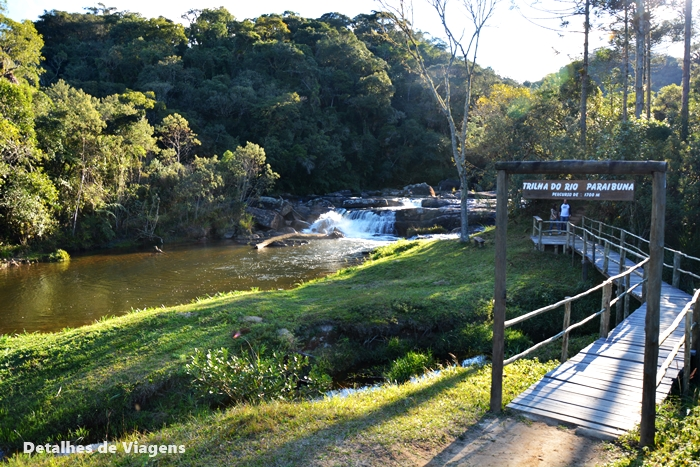
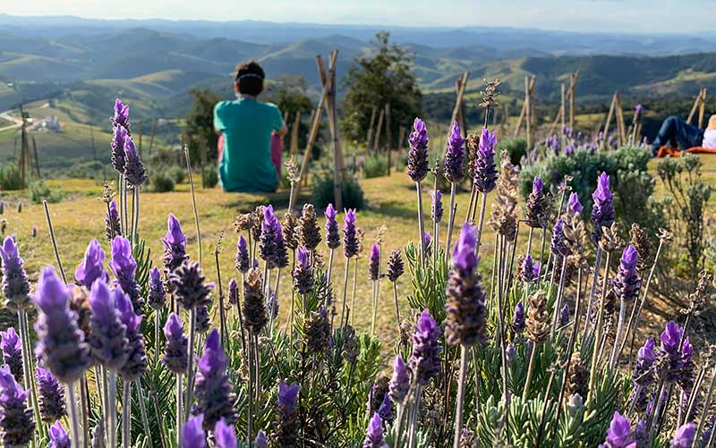
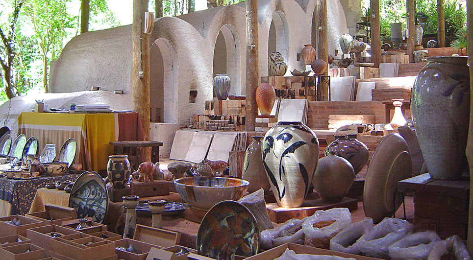
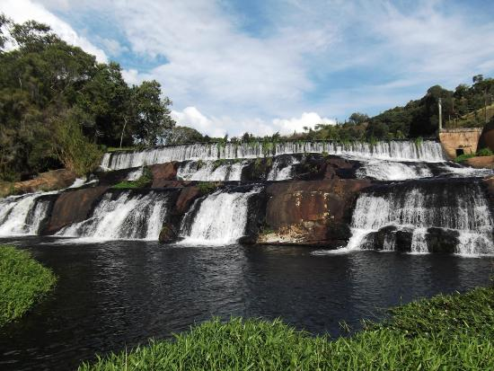
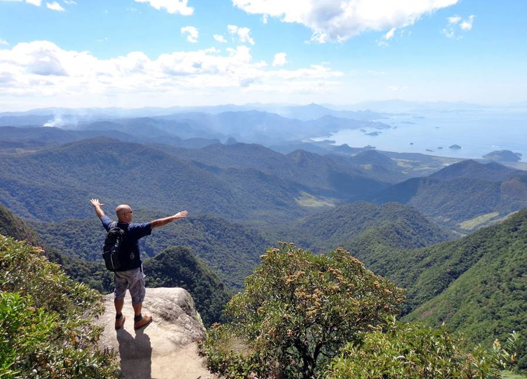
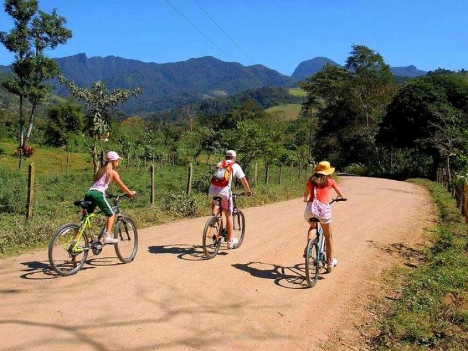
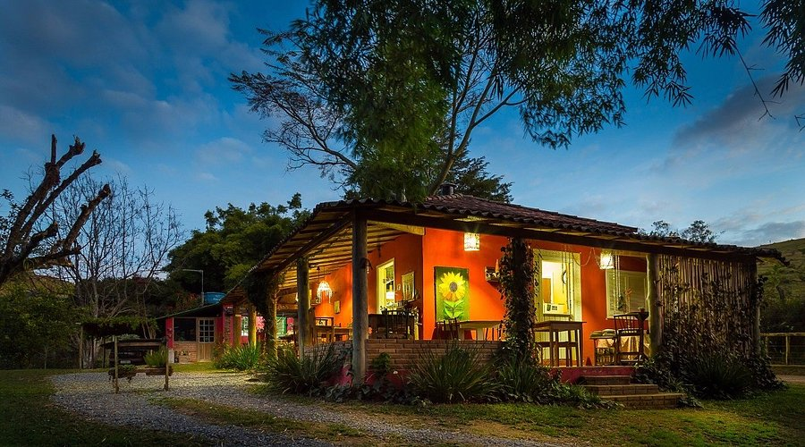
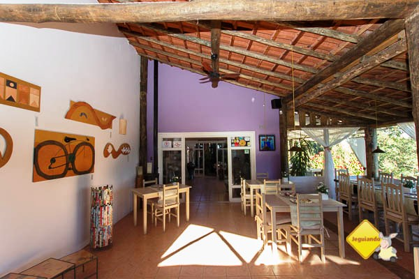
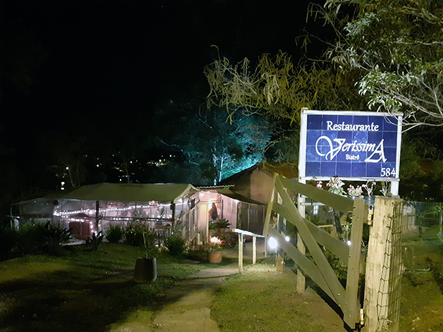

Bem-vindo ao Guia Turístico de Cunha!
Cunha é um destino encantador na Serra do Mar, entre São Paulo e Rio de Janeiro, perfeito para quem busca
natureza, gastronomia e cultura. Nosso guia foi criado para ajudar você a planejar sua viagem com
facilidade, reunindo as melhores atrações, atividades, hospedagens e restaurantes da região. Aproveite
para descobrir roteiros únicos e dicas exclusivas!
Atrações
Cunha é famosa por suas paisagens deslumbrantes e experiências únicas. Confira as principais atrações:
-
Parque Estadual da Serra do Mar. Núcleo Cunha

Horário: Todos os dias, das 8h às 17h
O que esperar: Trilhas ecológicas, mirantes com vista para a Mata Atlântica e cachoeiras cristalinas. Ideal para quem ama natureza e fotografia.
Dica: Leve repelente e água. Entrada gratuita.
-
Lavandário de Cunha

Horário: Sexta a domingo, das 10h às 17h
O que esperar: Campos de lavanda, loja com produtos artesanais e um café charmoso.
Melhor época: Junho a setembro, quando as lavandas estão floridas.
Ingresso: Aproximadamente R$20 por pessoa.
-
Ateliês de Cerâmica

Horário: Geralmente das 10h às 18h (varia por ateliê)
O que esperar: Arte local, peças exclusivas e workshops para quem deseja aprender técnicas de cerâmica.
Destaque: Ateliê Suenaga & Jardineiro e Ateliê Gilda Mattar.
-
Cachoeira do Pimenta

Horário: Acesso livre, melhor visitar pela manhã.
O que esperar: Uma bela cachoeira com poço para banho, rodeada por vegetação exuberante.
Dica: Leve lanche e aproveite o dia. Entrada gratuita.
Atividades
Além das atrações, Cunha oferece experiências para todos os estilos:
-
Trilhas e Ecoturismo

Trilha do Rio Paraibuna: Nível fácil, duração média de 2h, ideal para iniciantes.
Trilha do Pouso do Rochedo: Vista panorâmica, nível moderado.
-
Passeios de Bike

Locais: Estradas rurais e mirantes.
Dica: Alugue bicicletas nas pousadas ou lojas locais.
-
Eventos Culturais
Festival de Inverno: Geralmente em julho, com música, gastronomia e arte.
Feira de Cerâmica: Datas variam, mas é imperdível para quem aprecia arte.
Hotéis
Hospede-se com conforto e aproveite a hospitalidade local:
-
Pousada Caminho do Ouro

Destaque: Chalés aconchegantes, café da manhã incluso e vista para as montanhas.
Ideal para: Casais e quem busca tranquilidade.
-
Hotel Fazenda São Francisco

Estrutura: Piscina, trilhas, atividades para crianças.
Ideal para: Famílias e grupos.
-
Chalés Recanto da Serra

Destaque: Privacidade e contato direto com a natureza.
Serviços: Cozinha equipada e lareira.
Restaurantes
A gastronomia é um dos pontos altos da cidade. Confira os melhores:
-
O Gnomo

Especialidade: Truta e pratos típicos da região.
Ambiente: Rústico e acolhedor.
-
Quebra Cangalha

Destaque: Comida caseira, porções generosas e ótimo custo-benefício.
-
Le Vin Bistrô

Ideal para: Quem aprecia vinhos e pratos sofisticados.
Sugestão: Experimente o fondue nos dias frios.
Cálculo de custos